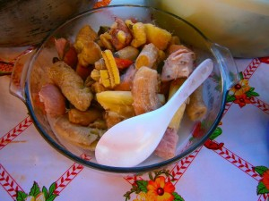

GASTRONOMÍA MISKITA
Platos:
Luk-Luk, Rondón, Auhbipiakan, Tualbi
Bebidas:
Buña de yuca o pijibay; Wabul de banano, plátano maduro, Greyfrut
GASTRONOMÍA AFRICANA (Creoles)
Platos:
Rondón de aleta de tortuga
Gallo pinto con coco Rondón de pescado
Rondón de carne de tortuga, Rondón de Wari Rondón de cerdo ahumado
Steau Beans (Frijoles con coco con Donplín: sopa marinera y camarón empanizado)
Arroz con camarón seco o fresco con coco
Sopa Mixta o marinera Pescado frito, Ceviche de camarón pescado, caracol y langosta
Sopa de Jaiba y Sopa de Cangrejo.
Repostería:
Queque de Quequisque
Queque de Yuca
Queque de pan viejo Queque de banano
Pati, Toto, Bon, Pan de coco, Yani Queque, Plantintá, Empanada de coco, Guisada.
Bebidas:
Jinja Beer; Te: zacate de limón, naranja agria, albahaca; Fermentado: maíz, arroz, naranja.
GASTRONOMÍA MAYAGNA
Platos:
Baho, Carne cocida, Carne asada y Dikuruhna (como indio viejo)
Bebidas:
Buña de pihibay, yuca, plátano maduro; Cacao con leche; Pozol y Wabul
Aderezan casi todos los alimentos con el culantro (kisuri).
GASTRONOMÍA MESTIZA
Platos:
Baho, Nacatamales, Tortillas de maíz, Indio Viejo, Vigorón, Maduro con queso y Gallopinto
Sopas:
de Albóndiga, de Queso, de Mondongo, frijoles
Bebidas:
Chicha fermentada y sin fermentar, Pinolillo, Cacao y Tamarindo con chilla